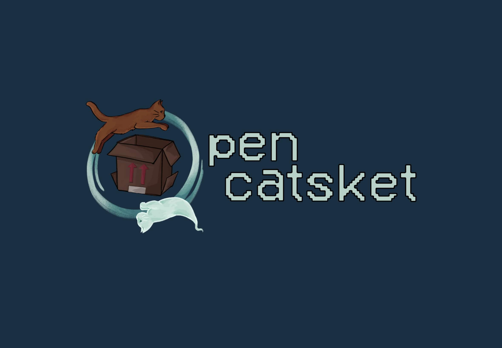

What have I built?

- A Euchre Simulator - Programmed in C++, simulated using Classes and Standard Input/Output
- A Search Engine - A scalable search engine using TF-IDF and PageRank to retrieve relevant documents based on queries. During this project, I also implemented a Mapreduce framework that assigns mapping and reducing tasks to workers
- A Full Stack Web App - A full-stack application using Flask that simulates the core features of Instagram. Featuring dynamic interactions between server and user, such as user authentication, account handling, and creating/liking posts; deployed to AWS. During this project I also created client side interactions using the React framework, such as infinite scrolling for new content and posting comments without the need to refresh the page
- As well as many exploratory projects such as: A Pipelined Datapath Simulator, Creating and Managing Hash Tables Through User Composition, Implementation of Optimization Algorithms, and more!
Custom Game Engine
For EECS498, I designed and released a cross-platform game engine, The Friendly Neighborhood Engine, compatible with Mac, Windows, and Linux. Thanks to the integration of SDL, this engine provides scalability over multiple platforms. The main features of the engine include:
- Box2D Integration: Accurate and efficient 2D physics simulation.
- Custom Particle System: High-performance effects like explosions and weather.
- Component-Based Architecture: Modular and flexible system design.
- Multiplayer Controller Support: Multi-controller compatibility - See it in action!
Metroid NES Remake

I recreated a portion of the classic NES game Metroid as part of a team, as well as designing and implementing a custom mechanic, and a level to explore its use cases. My specialities for this project included: Custom level design, enemy behavior, inventory system design, health management, and other miscelaneous tasks.
You can play the game here!
You can play the game here!
Black Hole in One

For our rapid prototyping project, limited to only two weeks, I built a casual physics based golf game called Black Hole in One! The main features of this game include: Planetary gravity, level transition mechanics, animation in Unity, level design, and EventBus tracking.
You can play the game here!
You can play the game here!
Open Catsket

For our capstone project, we built a puzzle platformer themed around Schrodingers Cat! The main feature of this game was the ability to shift between alive and dead in order to change how you interact with your environment. My specialities for this project included: event management, interactable buttons and their effects, puzzle design, aesthetics, trailer creation for our showcase, and project management.
You can play the game here!
You can play the game here!